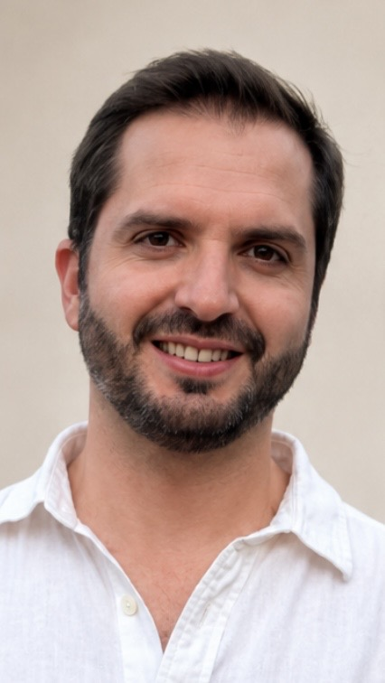

Gabriel Cruz
PhD Candidate in Economics · University of Maryland
Welcome! I am a PhD candidate in Economics at the University of Maryland, College Park. My research interests lie at the intersection of health economics, education, labor economics, and demography.
Prior to my PhD, I worked as a Senior Research Associate at J-PAL LAC and as a math teacher in Chile through Enseña Chile (Teach For America). I hold an M.A. and B.A. in Economics from Pontificia Universidad Católica de Chile.
Research
Publications
Educational Researcher, Volume 54, Issue 7, October 2025
Labour Economics, 75, April 2022
Technological Forecasting and Social Change, 176, March 2022
Work in Progress
Preventing Unplanned Pregnancies: Implications for Education, and the Next Generation
My Mother Was a Suffragette: The Intergenerational Effects of Women's Right to Vote
The Power of the Market: How the Contraceptive Industry Affects Birth Rates
Heat and Learning: Large-Scale Evidence on Heterogeneous Impacts Across Mexico
Policy Reports
Desafíos presentes y futuros para las mujeres en el mercado laboral en Chile
"Tejiendo rutas. Perspectivas para un Chile con equidad de género", Fondo de Cultura Económica, 2023
Futuro del Trabajo: Desafíos para el Futuro del Trabajo en Chile
"Chile tiene Futuro desde sus Territorios." Ediciones Biblioteca del Congreso Nacional de Chile, 2022
Poder de negociación y brecha salarial de género: caso chileno
Revista Estudios de Políticas Públicas, 2(1), 4-22, 2016
CV
You can download my full curriculum vitae below.
Download CV